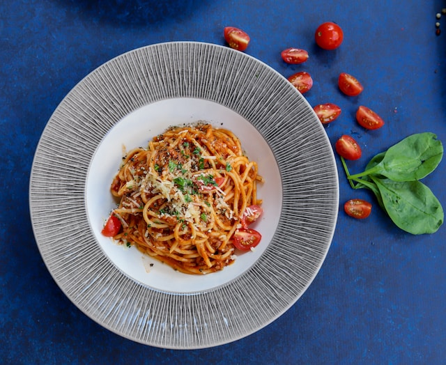

Fideos con Salsa

Un plato clasico y simple, aun asi muy delicioso!
Este plato es uno de mis favoritos, si bien casi todos utilizan spaghetti, con cualquier tipo pasta queda bien.
Podemos agregar algun tipo de carne para acompañar, como por ejemplo un poco de pollo trozado.
Ingredientes
- Pasta (De tu elección, yo elijo pasta al huevo casera)
- 3 tomates
- 1 cebolla
- Aceite de girasol o de oliva c/n
- Sal c/n
- Pimienta c/n
- Pimenton c/n
- Albahaca c/n
- Azucar
- Carne en trozos (Opcional)
Preparación
- Pelar los tomates y cortarlos hasta que quede como un pure, agregarle una pizca de albahaca y azucar para eliminar la acidez del tomate.
- Colocamos una fuente con agua y sal en el fuego, cuando hierva colocamos los fideos y cocinamos al dente.
- Cortar en cubos la cebolla, lo mas pequeño posible.
- En una fuente con aceite a fuego medio, colocamos la cebolla y lo dejamos hasta que esta este transparente, agregar la sal, pimienta y revolver.
- Agregamos el pimenton y la carne en trozos y lo dejamos un tiempo hasta que se selle la carne.
- Agregamos el tomate y dejamos cocinar hasta que se forme una salsa, podemos agregar un poco de agua en caso de que sea necesario.
- para emplatar, colocamos la pasta y por encima la salsa.